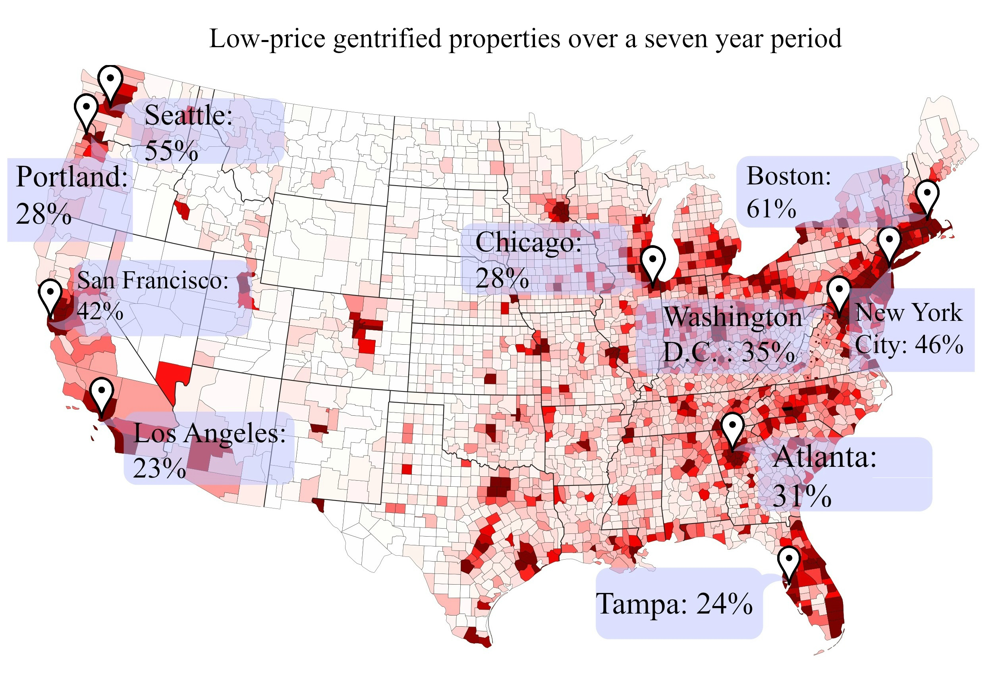

GENTRI
Toggle navigation
Home
What is Gentrification?
Purpose
Game
About Us
GENTRI
Educating and Raising Awareness about Gentrification in Major Cities Across the Country
Click here to PLAY the Gentri game!

Top 3 Cities Facing Gentrification in the U.S
Boston
Seattle
New York